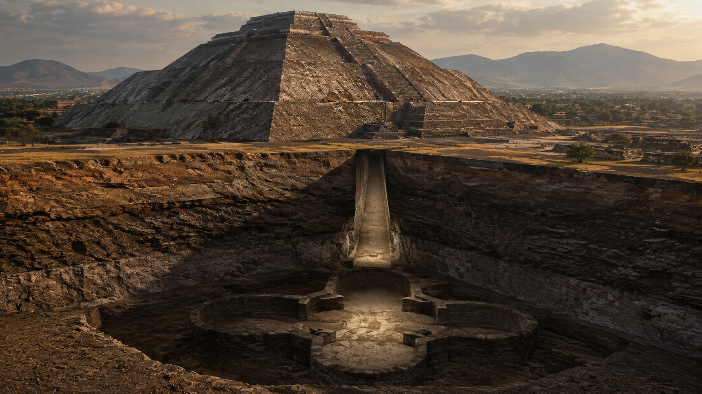

From above, the Pyramid of the Sun at Teotihuacan looks almost self-explanatory. It is enormous, symmetrical, and monumental—a massive stone structure rising from the ancient city of Teotihuacan in central Mexico.
But archaeology has revealed something much stranger beneath it.
A tunnel runs deep beneath the pyramid and leads toward a distinctive four-lobed subterranean chamber. The underground structure appears to have been deliberately created before the final monument was built above it, meaning that an important part of the pyramid's story is hidden below ground rather than visible on its surface.
What was the underground space for? And perhaps more importantly: why was such a structure built beneath the monument at all?
A City Older Than the Aztecs
Teotihuacan was already an ancient and abandoned city long before the Aztec Empire rose to power. Located in what is now central Mexico, it became one of the largest urban centers of the ancient Americas.
Its monumental architecture was constructed centuries before the Aztecs encountered the site and gave it the name by which it is commonly known today.
The Pyramid of the Sun was one of the city's dominant structures. According to Mexico's National Institute of Anthropology and History (INAH), the monument measures roughly 222 by 225 meters at its base and originally reached about 65 meters in height.
It was not simply a giant pile of stone. The monument was constructed from stone, earth, and clay, and its exterior was faced with volcanic stone.
The Tunnel Beneath the Pyramid
Archaeological investigations revealed a subterranean passage extending for approximately 103 meters beneath the Pyramid of the Sun. At its center lies a chamber with a distinctive four-lobed form.
The tunnel was not a natural geological cavity that happened to exist beneath the pyramid. Archaeological evidence indicates that the subterranean structure was deliberately constructed or extensively modified by people.
This distinction matters. If the space had simply been a naturally occurring cave, the builders could have incorporated an existing feature into their architecture. Instead, the evidence points toward deliberate human activity underground—before or during the development of the monumental pyramid above it.
A Chamber With Four Lobes
The four-lobed chamber is one of the most unusual features discovered beneath the pyramid.
Archaeologists have proposed that the underground space had ritual significance. INAH currently describes the subterranean chamber as a place potentially associated with concepts of mythical origin and the symbolic beginning of the world.
However, this is an interpretation—not a deciphered message left by the builders. There is no surviving inscription beneath the pyramid that simply tells us, in the builders' own words, what the chamber represented.
Instead, researchers have to reconstruct its possible meaning from architecture, archaeological deposits, construction history, comparisons with other Mesoamerican traditions, and the broader organization of Teotihuacan.
It Was Probably Built Before the Pyramid Above It
One of the most important findings from archaeological investigations is that the subterranean structure appears to predate the final construction of the Pyramid of the Sun.
Excavations conducted as part of the Sun Pyramid Project between 2008 and 2011 identified several construction stages. The researchers distinguished an earlier subterranean phase, the main pyramid construction, and a later adjoining platform.
This sequence changes the way the monument can be understood. The builders were not necessarily constructing an enormous pyramid and then discovering that there happened to be something underneath it. Evidence instead suggests that the underground structure was part of an earlier architectural history that became incorporated into the monumental complex.
But When Was the Pyramid Actually Built?
This is where the story becomes considerably more complicated.
Archaeologists have debated the chronology of the Pyramid of the Sun for decades. Older archaeological evidence traditionally placed the beginning of its construction during the first century AD or around the earliest major phases of Teotihuacan's development.
The 2008–2011 excavations produced radiocarbon dates that led Sugiyama, Sugiyama, and Sarabia to propose a later construction chronology, approximately AD 170–310 for the Pyramid of the Sun and approximately AD 140–240 for the subterranean tunnel.
Those dates, however, should not be treated as the final answer. Archaeologist Rebecca Sload later reexamined the chronological evidence and argued that the radiocarbon dates could instead reflect episodes of ritual activity, cave use, termination, or architectural modification rather than the initial construction of the pyramid itself.

Was It a Place of Ritual?
The archaeological evidence strongly suggests that the subterranean structure was not simply an engineering feature.
Excavations recovered archaeological materials and features that researchers have interpreted in connection with ritual activities. The Sun Pyramid Project proposed that the underground space may have been involved in ceremonies and possibly in contexts involving offerings or elite burials.
But the precise function remains unresolved. It is therefore more accurate to say that the underground structure appears to have had an important ritual role than to claim that archaeologists know exactly what every ceremony performed there meant.
The Underground World of Mesoamerica
The possible ritual importance of the subterranean space becomes more understandable when considered within the broader religious traditions of ancient Mesoamerica.
Caves, mountains, water, darkness, and subterranean spaces could carry powerful symbolic associations in different Mesoamerican traditions. Underground spaces could be connected with origins, fertility, ancestors, water, sacred landscapes, and the world beneath the surface.
This does not prove that the four-lobed chamber represented one specific concept. Instead, it provides a cultural context in which deliberately constructed underground architecture could have carried religious meaning.
How We Researched This Article & Sources
This article was researched using archaeological publications and official Mexican heritage sources. Particular attention was given to the excavation reports and chronological interpretations of the Sun Pyramid Project, subsequent scholarly reassessment of the dating evidence, studies of Teotihuacan's astronomical orientations, and INAH documentation of the Pyramid of the Sun and its subterranean structure.
- Sugiyama, Nawa; Sugiyama, Saburo G.; Sarabia G., Alejandro. Inside the Sun Pyramid at Teotihuacan, Mexico: 2008–2011 Excavations and Preliminary Results. Latin American Antiquity, 24(4), 403–432, 2013.
- Sload, Rebecca. When Was the Sun Pyramid Built? Maintaining the Status Quo at Teotihuacan, Mexico. Latin American Antiquity, 26(2), 221–241.
- Šprajc, Ivan. Astronomical Alignments at Teotihuacan, Mexico. Latin American Antiquity, 403–415.
- Sarabia González, Alejandro. Los “túneles arqueológicos” en la pirámide del Sol de Teotihuacán. Arqueología, 61, 47–59, INAH, 2022.
- Instituto Nacional de Antropología e Historia (INAH). Pyramid of the Sun — Teotihuacan Archaeological Zone.